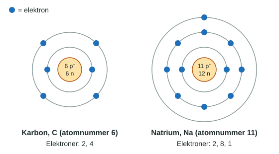
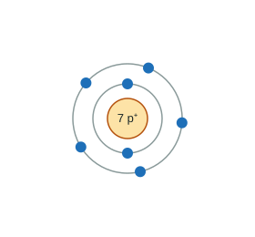

Atomet og skallmodellen
Alt du jobber med i et prosessanlegg og på laben, er bygd opp av atomer: råstoffet i tanken, løsningen i målekolben og metallet i rørene. Hvordan atomet er bygd opp, forklarer hvorfor stoffer reagerer som de gjør. Derfor starter vi her.
Hva er et atom?
Et atom er en av naturens minste byggeklosser. Alle stoffer er bygd opp av atomer, og hvert grunnstoff har sin egen type atom. Et grunnstoff er et stoff som bare består av én type atomer, for eksempel jern, oksygen eller karbon.
Atomet har en liten kjerne i midten. Kjernen består av protoner og nøytroner. Rundt kjernen beveger det seg elektroner. Massen til så små partikler måles i enheten u (atommasseenhet).
| Partikkel | Ladning | Hvor den er | Masse |
|---|---|---|---|
| proton | positiv (+) | i kjernen | ca. 1 u |
| nøytron | ingen (nøytral) | i kjernen | ca. 1 u |
| elektron | negativ (−) | i skall rundt kjernen | nesten null |
Et elektron er omtrent 1800 ganger lettere enn et proton. Nesten all massen i atomet ligger derfor i kjernen.
Et atom har like mange protoner som elektroner. Da opphever plussene og minusene hverandre, og atomet er nøytralt (uten ladning).
Atomnummer
Atomnummeret er antall protoner i kjernen. Det bestemmer hvilket grunnstoff atomet er. Atomnummeret finner du i periodesystemet.
Eksempel: Karbon har atomnummer 6. Alle karbonatomer har derfor 6 protoner, og et atom med 6 protoner er alltid karbon. Får atomet ett proton til, er det ikke lenger karbon, men nitrogen (atomnummer 7).
Siden atomet er nøytralt, er atomnummeret også antall elektroner. Karbon har altså 6 protoner og 6 elektroner.
Antall protoner og nøytroner til sammen kalles massetallet. Et karbonatom med 6 protoner og 6 nøytroner har massetall 12. Elektronene regnes ikke med, fordi de nesten ikke veier noe.
Skallmodellen
Elektronene ligger i elektronskall rundt kjernen. Hvert skall har plass til et bestemt antall elektroner, og det innerste skallet fylles først:
- 1. skall: inntil 2 elektroner
- 2. skall: inntil 8 elektroner
- 3. skall: inntil 8 elektroner
Denne regelen gjelder for de 20 første grunnstoffene, fra hydrogen til kalsium. Det er de du trenger her. For tyngre atomer blir fordelingen mer sammensatt.

Elektronene i det ytterste skallet kalles ytterelektroner. De er de viktigste i kjemien, for det er de som bestemmer hvordan atomet reagerer og hvilke bindinger det lager. Karbon har 4 ytterelektroner, og natrium har 1.
Eksempel
Oppgave: Hvordan er elektronene i et kloratom (Cl) fordelt i skallene, og hvor mange ytterelektroner har det?
Løsning:
- Finn atomnummeret i periodesystemet: klor har atomnummer 17.
- Atomet er nøytralt, så det har 17 elektroner.
- Fyll det innerste skallet først: 2 elektroner i 1. skall. Da er 15 igjen.
- Fyll 2. skall: 8 elektroner. Da er 7 igjen.
- De 7 siste går i 3. skall.
Svar: Klor har elektronene fordelt som 2, 8, 7. Det har 7 ytterelektroner.
Derfor reagerer natrium så kraftig med vann
Natrium har bare 1 ytterelektron. Det elektronet gir natrium lett fra seg. Derfor reagerer natrium kraftig med vann. Det dannes hydrogengass og natriumhydroksid. Som en reaksjonsligning ser det slik ut (reaksjonsligninger lærer du om i emne 2C):
\[ \ce{2Na + 2H2O -> 2NaOH + H2} \]
Kalium (K, atomnummer 19) har elektronene fordelt som 2, 8, 8, 1. Det har også 1 ytterelektron, og reagerer enda kraftigere enn natrium. Ytterelektronet ligger lenger fra kjernen og sitter derfor løsere. Grunnstoffer med likt antall ytterelektroner oppfører seg ofte likt. Det ser du igjen i periodesystemet.
Natrium reagerer voldsomt med vann og kan ta fyr. Det oppbevares under parafinolje og skal aldri berøres med fingrene. Bruk pinsett og kniv. Forsøket med natrium i vann gjøres bare som demonstrasjon av læreren, med en liten bit, bak skjerm og med vernebriller. Hydrogengassen som dannes, er brennbar, og løsningen blir etsende (natriumhydroksid).
Test deg selv
Hvor mange ytterelektroner har atomet på figuren?

- 2
- 5
- 7
Ytterelektronene er elektronene i det ytterste skallet: 5. Atomet er nitrogen (7 protoner).
Hvilke partikler finnes i atomkjernen?
- protoner og elektroner
- protoner og nøytroner
- bare nøytroner
Kjernen består av protoner (+) og nøytroner (uten ladning). Elektronene er i skall rundt kjernen.
Oksygen har atomnummer 8. Hvordan er elektronene fordelt?
- 8
- 2, 6
- 2, 4, 2
Første skall har plass til 2. De 6 andre går i andre skall.
Et atom har elektronene fordelt som 2, 8, 3. Hvilket grunnstoff er det?
- natrium
- aluminium
- silisium
2 + 8 + 3 = 13 elektroner, altså 13 protoner. Atomnummer 13 er aluminium.
Hvorfor har et atom ingen ladning?
- Det har like mange protoner som elektroner.
- Nøytronene opphever ladningen.
- Elektronene har ingen ladning.
Plussene (protonene) og minusene (elektronene) opphever hverandre.
Litium har elektronene fordelt som 2, 1. Reagerer litium med vann?
- Ja, det har 1 ytterelektron, akkurat som natrium.
- Nei, det har for få elektroner.
- Nei, det har fullt ytterskall.
Litium gir lett fra seg sitt ene ytterelektron, men reagerer roligere enn natrium.
Ordliste
| Begrep | Forklaring | Engelsk |
|---|---|---|
| atom | En av naturens minste byggeklosser. Alle stoffer er bygd opp av atomer, og hvert grunnstoff har sin egen type atom. | |
| atomkjerne | Den lille, tunge delen i midten av atomet. Den består av protoner og nøytroner og har nesten all massen. | |
| proton | Positivt ladd partikkel i atomkjernen. | |
| nøytron | Partikkel uten ladning i atomkjernen. | |
| elektron | Svært lett partikkel med negativ ladning. Elektronene befinner seg i skall rundt kjernen. | |
| atomnummer | Antall protoner i kjernen. Det bestemmer hvilket grunnstoff atomet er. | |
| massetall | Antall protoner og nøytroner i kjernen til sammen. | |
| elektronskall | Område rundt kjernen der elektronene befinner seg. Hvert skall har plass til et bestemt antall elektroner. | |
| ytterelektron | Elektron i det ytterste skallet. Antallet avgjør i stor grad hvordan atomet reagerer og binder seg til andre atomer. |
Les mer
- Kjemien stemmer, kapittel 1. Oppgaver: 1.5.1 og 1.5.2 a)–e).
Om kildene: Teksten, eksemplene og figurene på denne siden er laget for dette nettstedet. Siden bygger på undervisningsopplegg i kjemiprosess- og laboratoriefag ved Sauda vgs, som er utarbeidet med utgangspunkt i blant annet Kjemien stemmer, Laboranten og åpne nettkilder.